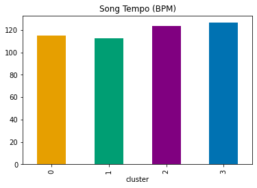
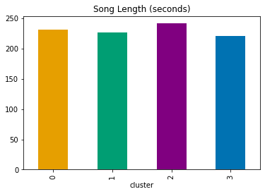

import warnings
import pandas as pd
from sklearn.feature_extraction.text import TfidfVectorizer
from sklearn.preprocessing import StandardScaler
from sklearn.cluster import KMeans
import matplotlib.pyplot as plt
from sklearn.preprocessing import LabelEncoder
from itertools import cycle, islice
import plotly.express as px
import plotly.graph_objects as go
# set display options
warnings.filterwarnings("ignore")
pd.set_option('display.max_columns', None)Research questions
Can we identify distinct groups of artists who are enjoyed by similar listeners?
Can we predict which songs a user is likely to add to their genre based on their listening history and similar users’ behavior?
- Engineered fields: Song popularity (Number of times a song appears across all playlists) and Collaborative similarity index (Overlap in playlist content between users)
Can we predict whether a song will be added to a playlist , based on the song elements (key, tempo, genre, and loudness) of the songs that already exist in the playlist?
df = pd.read_csv('../../data/clean_data.csv')
df.head()| user | artist | playlist | tracks | spotify_popularity | genre | key | tempo | popularity | energy | ... | good_for_work_study | good_for_relaxation_meditation | good_for_exercise | good_for_running | good_for_yoga_stretching | good_for_driving | good_for_social_gatherings | good_for_morning_routine | length_seconds | loudness_db_num | |
|---|---|---|---|---|---|---|---|---|---|---|---|---|---|---|---|---|---|---|---|---|---|
| 0 | 00055176fea33f6e027cd3302289378b | 5 Seconds Of Summer | favs | 10 | 0.025129 | pop,pop rock,pop punk | D Maj | 134.162338 | 44.811688 | 80.545455 | ... | 0.000000 | 0.000000 | 0.285714 | 0.162338 | 0.0 | 0.038961 | 0.006494 | 0.032468 | 210.675325 | -4.913896 |
| 1 | 00055176fea33f6e027cd3302289378b | Against The Current | favs | 3 | 0.001571 | acoustic,pop rock,rock | G Maj | 121.264706 | 37.147059 | 84.441176 | ... | 0.000000 | 0.000000 | 0.352941 | 0.088235 | 0.0 | 0.029412 | 0.000000 | 0.029412 | 199.794118 | -4.070000 |
| 2 | 00055176fea33f6e027cd3302289378b | All Time Low | favs | 8 | 0.030531 | alternative rock,emo,pop punk | D Maj | 142.752066 | 38.801653 | 87.652893 | ... | 0.008264 | 0.000000 | 0.206612 | 0.049587 | 0.0 | 0.000000 | 0.000000 | 0.000000 | 202.413223 | -4.211901 |
| 3 | 00055176fea33f6e027cd3302289378b | Austin Mahone | favs | 1 | 0.016145 | pop | B Maj | 111.692308 | 31.871795 | 63.461538 | ... | 0.076923 | 0.051282 | 0.230769 | 0.025641 | 0.0 | 0.128205 | 0.000000 | 0.230769 | 198.230769 | -5.960256 |
| 4 | 00055176fea33f6e027cd3302289378b | Avril Lavigne | favs | 2 | 0.071806 | rock,pop,alternative rock | F Maj | 128.726316 | 57.505263 | 79.252632 | ... | 0.005263 | 0.000000 | 0.242105 | 0.152632 | 0.0 | 0.005263 | 0.010526 | 0.021053 | 214.731579 | -4.756263 |
5 rows × 27 columns
Preprocessing
Let’s cluster this data to find similar groups
# separate columns by dtypes
cat_cols = df.select_dtypes(include=['object', 'category']).columns.tolist()
num_cols = df.select_dtypes(include=['int64', 'float64']).columns.tolist()
print('Categorical columns: ', cat_cols)
print('Numerical columns: ', num_cols)
df.isnull().sum().sum()Categorical columns: ['user', 'artist', 'playlist', 'genre', 'key']
Numerical columns: ['tracks', 'spotify_popularity', 'tempo', 'popularity', 'energy', 'danceability', 'positiveness', 'speechiness', 'liveness', 'acousticness', 'instrumentalness', 'good_for_party', 'good_for_work_study', 'good_for_relaxation_meditation', 'good_for_exercise', 'good_for_running', 'good_for_yoga_stretching', 'good_for_driving', 'good_for_social_gatherings', 'good_for_morning_routine', 'length_seconds', 'loudness_db_num']0# run tf_idf for clustering (exclude id columns like user/artist)
tf_idf_cols = ['playlist', 'genre', 'key']
# create vectorizers
playlist_vectorizer = TfidfVectorizer(
max_df=0.5,
min_df=5,
stop_words="english",
)
playlist_tfidf = playlist_vectorizer.fit_transform(df['playlist'])
genre_vectorizer = TfidfVectorizer(
max_df=0.5,
min_df=5,
stop_words="english",
)
genre_tfidf = genre_vectorizer.fit_transform(df['genre'])
key_vectorizer = TfidfVectorizer(
max_df=0.5,
min_df=5,
stop_words="english",
)
key_tfidf = key_vectorizer.fit_transform(df['key'])Playlist clustering
# use kmeans to cluster playlists together
# tweaked n_clusters using elbow method below
playlist_kmeans = KMeans(n_clusters=35, random_state=42)
# fit the model
playlist_kmeans.fit(playlist_tfidf)
# store cluster labels in a variable
playlist_clusters = playlist_kmeans.labels_
df['playlist_cluster'] = playlist_clusters
df_playlist_cluster = df[['playlist', 'playlist_cluster']].drop_duplicates().copy()
# look at this to see if it makes sense
df_playlist_cluster/Users/brandon/miniforge3/envs/mlenv_now/lib/python3.8/site-packages/sklearn/cluster/_kmeans.py:1416: FutureWarning: The default value of `n_init` will change from 10 to 'auto' in 1.4. Set the value of `n_init` explicitly to suppress the warning
super()._check_params_vs_input(X, default_n_init=10)| playlist | playlist_cluster | |
|---|---|---|
| 0 | favs | 6 |
| 41 | Fav songs | 7 |
| 49 | Sad songs | 7 |
| 51 | 2014 | 29 |
| 83 | Agnetha Fältskog | 6 |
| ... | ... | ... |
| 3026574 | l a d y anthems | 6 |
| 3026588 | KickAss | 6 |
| 3026645 | natural elements | 6 |
| 3026648 | 5:19 | 6 |
| 3026825 | Say You Love Me | 6 |
128508 rows × 2 columns
Playlist clustering notes
k=35
- 0: baby
- 1: starred
- 2: free
- 3: radio
- 4: 80’s
- 5: good, covers, others (this may be misc)
- 6: misc
- 7: songs
- 8: list
- 9: rock
- 10: day
- 11: library
- 12: time
- 13: playlist
- 14: work
- 15: party
- 16: country & summer
- 17: pop
- 18: new
- 19: 2012
- 20: live
- 21: hip
- 22: various artists
- 23: music
- 24: warm
- 25: deluxe
- 26: 2015
- 27: favorites
- 28: dance
- 29: 2014
- 30: smooth
- 31: hits
- 32: stuff
- 33: 2013
- 34: hip hop
df_playlist_cluster['playlist_cluster'].value_counts()6 105995
22 2375
25 1424
7 1419
23 1409
20 1286
13 1251
29 1220
9 1184
33 1081
18 934
19 852
16 767
17 745
26 677
28 652
12 598
10 573
5 563
15 553
31 503
34 438
32 394
8 392
14 231
0 223
4 212
27 211
2 115
30 76
11 44
3 37
24 35
21 29
1 10
Name: playlist_cluster, dtype: int64# commenting out due to large runtime; cluster analysis recorded in notes
# # optimize clustering - playlist
# # find optimal k to use for grouping (hopefully get that 0 cluster down)
# inertia = []
# # we'll go up to 40 clusters
# upper = 40
# # loop through, try every k value from 2-20
# for k in range(2, upper):
# kmeans = KMeans(n_clusters=k, random_state=0)
# kmeans.fit(playlist_tfidf)
# inertia.append(kmeans.inertia_)# # elbow method to find optimal k
# fig = plt.figure(figsize=(10, 6))
# plt.plot(range(2, upper), inertia, marker='o')
# plt.title('Elbow Method for Optimal k')
# plt.xlabel('Number of Clusters (k)')
# plt.ylabel('Inertia (Sum of Squared Distances)')
# plt.xticks(range(2, upper))
# plt.show()df.head()| user | artist | playlist | tracks | spotify_popularity | genre | key | tempo | popularity | energy | ... | good_for_relaxation_meditation | good_for_exercise | good_for_running | good_for_yoga_stretching | good_for_driving | good_for_social_gatherings | good_for_morning_routine | length_seconds | loudness_db_num | playlist_cluster | |
|---|---|---|---|---|---|---|---|---|---|---|---|---|---|---|---|---|---|---|---|---|---|
| 0 | 00055176fea33f6e027cd3302289378b | 5 Seconds Of Summer | favs | 10 | 0.025129 | pop,pop rock,pop punk | D Maj | 134.162338 | 44.811688 | 80.545455 | ... | 0.000000 | 0.285714 | 0.162338 | 0.0 | 0.038961 | 0.006494 | 0.032468 | 210.675325 | -4.913896 | 6 |
| 1 | 00055176fea33f6e027cd3302289378b | Against The Current | favs | 3 | 0.001571 | acoustic,pop rock,rock | G Maj | 121.264706 | 37.147059 | 84.441176 | ... | 0.000000 | 0.352941 | 0.088235 | 0.0 | 0.029412 | 0.000000 | 0.029412 | 199.794118 | -4.070000 | 6 |
| 2 | 00055176fea33f6e027cd3302289378b | All Time Low | favs | 8 | 0.030531 | alternative rock,emo,pop punk | D Maj | 142.752066 | 38.801653 | 87.652893 | ... | 0.000000 | 0.206612 | 0.049587 | 0.0 | 0.000000 | 0.000000 | 0.000000 | 202.413223 | -4.211901 | 6 |
| 3 | 00055176fea33f6e027cd3302289378b | Austin Mahone | favs | 1 | 0.016145 | pop | B Maj | 111.692308 | 31.871795 | 63.461538 | ... | 0.051282 | 0.230769 | 0.025641 | 0.0 | 0.128205 | 0.000000 | 0.230769 | 198.230769 | -5.960256 | 6 |
| 4 | 00055176fea33f6e027cd3302289378b | Avril Lavigne | favs | 2 | 0.071806 | rock,pop,alternative rock | F Maj | 128.726316 | 57.505263 | 79.252632 | ... | 0.000000 | 0.242105 | 0.152632 | 0.0 | 0.005263 | 0.010526 | 0.021053 | 214.731579 | -4.756263 | 6 |
5 rows × 28 columns
# make sure you didn't do anything wrong
df.isnull().sum().sum()0Genre clustering
# use kmeans to cluster genres together
genre_k = 12
# tweaked n_clusters using elbow method below
genre_kmeans = KMeans(n_clusters=genre_k, random_state=42)
# fit the model
genre_kmeans.fit(genre_tfidf)
# store cluster labels in a variable
genre_clusters = genre_kmeans.labels_
df['genre_cluster'] = genre_clusters
df_genre_cluster = df[['genre', 'genre_cluster']].drop_duplicates().copy()
# look at this to see if it makes sense
df_genre_cluster/Users/brandon/miniforge3/envs/mlenv_now/lib/python3.8/site-packages/sklearn/cluster/_kmeans.py:1416: FutureWarning: The default value of `n_init` will change from 10 to 'auto' in 1.4. Set the value of `n_init` explicitly to suppress the warning
super()._check_params_vs_input(X, default_n_init=10)| genre | genre_cluster | |
|---|---|---|
| 0 | pop,pop rock,pop punk | 5 |
| 1 | acoustic,pop rock,rock | 0 |
| 2 | alternative rock,emo,pop punk | 9 |
| 3 | pop | 5 |
| 4 | rock,pop,alternative rock | 0 |
| ... | ... | ... |
| 2919402 | progressive rock,metal,progressive metal | 9 |
| 2931633 | j-pop,indie,pop | 8 |
| 2960338 | punk,pop rock | 5 |
| 2973903 | rock,hip-hop,reggae | 1 |
| 2999608 | punk,lo-fi,emo | 9 |
2579 rows × 2 columns
Genre clustering notes
k = 12
- 0: rock
- 1: hip-hop
- 2: electronic
- 3: country
- 4: soul
- 5: pop
- 6: synth
- 7: folk
- 8: indie
- 9: misc / rock / metal / punk
- 10: electropop
- 11: jazz
df_genre_cluster['genre_cluster'].value_counts()9 967
0 359
2 240
8 215
11 129
7 119
4 115
1 101
5 91
6 82
10 81
3 80
Name: genre_cluster, dtype: int64# # TODO: commenting out due to large runtime; cluster analysis recorded in notes
# # optimize clustering - genre
# # find optimal k to use for grouping (hopefully get that 0 cluster down)
# inertia = []
# # we'll go up to 20 clusters
# upper = 20
# # loop through, try every k value from 2-20
# for k in range(2, upper):
# kmeans = KMeans(n_clusters=k, random_state=0)
# kmeans.fit(genre_tfidf)
# inertia.append(kmeans.inertia_)# # TODO: elbow method to find optimal k (slow, commented out until notebook finalized)
# fig = plt.figure(figsize=(10, 6))
# plt.plot(range(2, upper), inertia, marker='o')
# plt.title('Elbow Method for Optimal k')
# plt.xlabel('Number of Clusters (k)')
# plt.ylabel('Inertia (Sum of Squared Distances)')
# plt.xticks(range(2, upper))
# plt.show()# see if key needs to be clustered or one-hot, etc
# with 24 items, go with label encoding or target encoding (below)
df['key'].drop_duplicates()0 D Maj
1 G Maj
3 B Maj
4 F Maj
5 F# Maj
6 C Maj
8 C# min
12 D# Maj
13 G# Maj
14 D# min
17 A Maj
19 F min
21 A# Maj
23 E min
30 E Maj
32 A min
33 B min
34 C# Maj
37 G min
43 F# min
44 D min
45 G# min
58 A# min
176 C min
Name: key, dtype: objectPreprocess data for model
# make categorical cluster dictionary from markdown notes
genre_cluster_dict = {
0: 'rock',
1: 'hip-hop',
2: 'electronic',
3: 'country',
4: 'soul',
5: 'pop',
6: 'synth',
7: 'folk',
8: 'indie',
9: 'misc',
10: 'electropop',
11: 'jazz'
}
playlist_cluster_dict = {
0: 'baby',
1: 'starred',
2: 'free',
3: 'radio',
4: "80's",
5: 'good, covers',
6: 'misc',
7: 'songs',
8: 'list',
9: 'rock',
10: 'day',
11: 'library',
12: 'time',
13: 'playlist',
14: 'work',
15: 'party',
16: 'country & summer',
17: 'pop',
18: 'new',
19: '2012',
20: 'live',
21: 'hip',
22: 'various artists',
23: 'music',
24: 'warm',
25: 'deluxe',
26: '2015',
27: 'favorites',
28: 'dance',
29: '2014',
30: 'smooth',
31: 'hits',
32: 'stuff',
33: '2013',
34: 'hip hop'
}
# drop categoricals that have already been converted
df = df.drop(['playlist', 'genre'], axis=1)# convert key to numerical and keep dictionary
def label_encode(df, column):
# encodes with label encoding, creates a dict, drops orig field
le = LabelEncoder()
encode_col = f'encoded_{column}'
df[encode_col] = le.fit_transform(df[column])
encode_dict = dict(zip(df[encode_col], df[column]))
# drop key column
df = df.drop(column, axis=1)
return df, encode_dict
df, key_dict = label_encode(df, 'key')# handle user and artist columns
df, user_dict = label_encode(df, 'user')
df, artist_dict = label_encode(df, 'artist')# scale columns
scaler = StandardScaler()
df_scaled = pd.DataFrame(scaler.fit_transform(df), columns=df.columns)
# Print the first few rows of the scaled DataFrame
df_scaled.head()| tracks | spotify_popularity | tempo | popularity | energy | danceability | positiveness | speechiness | liveness | acousticness | ... | good_for_driving | good_for_social_gatherings | good_for_morning_routine | length_seconds | loudness_db_num | playlist_cluster | genre_cluster | encoded_key | encoded_user | encoded_artist | |
|---|---|---|---|---|---|---|---|---|---|---|---|---|---|---|---|---|---|---|---|---|---|
| 0 | 0.671333 | -0.509285 | 1.001246 | 0.738532 | 0.965072 | -0.249899 | -0.203578 | 0.595331 | 1.088437 | -0.882902 | ... | -0.077897 | -0.148138 | -0.304741 | -0.507071 | 1.075488 | -0.324883 | 0.163329 | 0.054619 | -1.72247 | -1.727603 |
| 1 | -0.007288 | -0.920003 | 0.011918 | 0.126424 | 1.199092 | 0.186841 | 0.487413 | -0.344771 | -0.427640 | -0.937822 | ... | -0.176448 | -0.256234 | -0.328255 | -0.701726 | 1.364636 | -0.324883 | -1.179070 | 1.541367 | -1.72247 | -1.674383 |
| 2 | 0.477441 | -0.415093 | 1.660131 | 0.258562 | 1.392023 | -0.706057 | 0.245248 | 0.045197 | 0.088073 | -0.961177 | ... | -0.479986 | -0.256234 | -0.554577 | -0.654872 | 1.316016 | -0.324883 | 1.237248 | 0.054619 | -1.72247 | -1.634536 |
| 3 | -0.201179 | -0.665905 | -0.722344 | -0.294866 | -0.061175 | 0.943107 | 0.442049 | -0.275094 | -0.464832 | -0.296492 | ... | 0.843129 | -0.256234 | 1.221178 | -0.729692 | 0.716968 | -0.324883 | 0.163329 | -0.837430 | -1.72247 | -1.523320 |
| 4 | -0.104234 | 0.304484 | 0.584270 | 1.752258 | 0.887411 | -0.339330 | -0.071477 | -0.276588 | 0.473270 | -0.825661 | ... | -0.425669 | -0.081005 | -0.392578 | -0.434508 | 1.129499 | -0.324883 | -1.179070 | 0.946668 | -1.72247 | -1.517452 |
5 rows × 27 columns
# create optimized k-means clustering model
optimal_k = 4
kmeans = KMeans(n_clusters=optimal_k, random_state=42, n_init=10)
df_scaled['cluster'] = kmeans.fit_predict(df_scaled)# add clusters to original df for analysis/visualization
df['cluster'] = df_scaled['cluster']
# remove good_for_ from the start of columns to make charts more readable
df = df.rename(columns=lambda x: x.replace('good_for_', ''))# create a bunch of radar plots to find most distinguishable differences
def radar_plot(df, cols, range=100):
df_graph = df[cols].copy()
df_graph.iloc[0]
df_graph.iloc[0].index
df_graph.iloc[0].values
categories = df_graph.iloc[0].index
fig = go.Figure()
# cluster 0
fig.add_trace(go.Scatterpolar(
r=df_graph.iloc[0].values,
theta=categories,
name='Cluster 0'
))
fig.add_trace(go.Scatterpolar(
r=df_graph.iloc[1].values,
theta=categories,
name='Cluster 1'
))
fig.add_trace(go.Scatterpolar(
r=df_graph.iloc[2].values,
theta=categories,
name='Cluster 2'
))
fig.add_trace(go.Scatterpolar(
r=df_graph.iloc[3].values,
theta=categories,
name='Cluster 3'
))
# colorblind palette
color_palette = {'Cluster 3': "#0072B2",
'Cluster 0': "#E69F00",
'Cluster 2': "#800080",
'Cluster 1': "#009E73"}
for group, color in color_palette.items():
fig.update_traces(
line=dict(color=color),
selector=dict(name=group))
fig.update_layout(
polar=dict(
radialaxis=dict(
visible=False,
range=[0, range]
)),
showlegend=True,
title='Music Qualities by Cluster',
legend=dict(
x=-0.07,
y=1.00,
)
)
return fig# make radar charts
df_grouped_med = df.groupby('cluster').median()
# use the most distinct values from df_grouped_med
focus_cols_best = ['popularity', 'energy', 'danceability', 'positiveness', 'acousticness']
radar_plot(df_grouped_med, focus_cols_best)Unable to display output for mime type(s): application/vnd.plotly.v1+jsondf_grouped_med| tracks | spotify_popularity | tempo | popularity | energy | danceability | positiveness | speechiness | liveness | acousticness | instrumentalness | party | work_study | relaxation_meditation | exercise | running | yoga_stretching | driving | social_gatherings | morning_routine | length_seconds | loudness_db_num | playlist_cluster | genre_cluster | encoded_key | encoded_user | encoded_artist | length_minutes, seconds | |
|---|---|---|---|---|---|---|---|---|---|---|---|---|---|---|---|---|---|---|---|---|---|---|---|---|---|---|---|---|
| cluster | ||||||||||||||||||||||||||||
| 0 | 1.0 | 0.026322 | 115.318182 | 34.151515 | 62.393939 | 66.402985 | 59.111111 | 7.02069 | 18.000000 | 20.662651 | 1.000000 | 0.000000 | 0.000000 | 0.000000 | 0.126482 | 0.010309 | 0.000000 | 0.076923 | 0.0 | 0.092715 | 231.710526 | -8.000000 | 6.0 | 4.0 | 8.0 | 7694.0 | 12514.0 | 3 |
| 1 | 1.0 | 0.024752 | 112.921875 | 31.192308 | 38.388889 | 51.314815 | 37.142857 | 4.25000 | 15.363636 | 62.941176 | 3.333333 | 0.000000 | 0.326446 | 0.119048 | 0.015385 | 0.000000 | 0.080645 | 0.000000 | 0.0 | 0.000000 | 226.833333 | -11.893333 | 6.0 | 6.0 | 8.0 | 7651.0 | 11836.0 | 3 |
| 2 | 1.0 | 0.033924 | 123.733333 | 33.000000 | 70.000000 | 49.138462 | 42.904762 | 5.00000 | 19.333333 | 15.800000 | 4.701183 | 0.009174 | 0.018349 | 0.000000 | 0.111111 | 0.008584 | 0.000000 | 0.000000 | 0.0 | 0.022059 | 241.476923 | -7.188333 | 6.0 | 3.0 | 8.0 | 7610.0 | 14217.0 | 4 |
| 3 | 1.0 | 0.053776 | 126.473684 | 41.857143 | 75.355932 | 62.933333 | 56.796296 | 6.17500 | 18.622378 | 9.552632 | 1.305263 | 0.222222 | 0.000000 | 0.000000 | 0.500000 | 0.076923 | 0.000000 | 0.000000 | 0.0 | 0.040268 | 220.308411 | -5.903875 | 6.0 | 4.0 | 8.0 | 7600.0 | 11781.0 | 3 |
Artists by Music Qualities
Cluster 0
Favors artists in the dance genre, with sounds that are more positive
Artist examples: - Sean Paul (2005) - KAYTRANADA (2025) - Wham! (1984) - Gwen Stefani (2016) - Michael Jackson (1987)
Cluster 1
Likes accoustic music, lower energy, less-danceable artists, and is the least attracted to popular songs
Artist examples: - Ray Charles (1960) - The Everly Brothers (1964) - Bon Iver (2009) - Regina Spektor (2006) - The Lumineers (2016)
Cluster 2
Second highest in energy, yet lowest in danceability
Artist examples: - The Killers (2004) - Yeah Yeah Yeahs (2007) - M83 (2003) - Aerosmith (1975) - alt-J (2022)
Cluster 3
Loves popular music and high energy, as well as danceable, positive songs
Artist examples: - Imagine Dragons (2012) - 50 Cent (2003) - Katy Perry (2017) - Taylor Swift (2022) - Maroon 5 (2010)
# sample artists that define each cluster
# cluster 0
print("cluster 0\n", df[df['cluster'] == 0].sample(5)['encoded_artist'].map(artist_dict))
# cluster 1
print("cluster 1\n", df[df['cluster'] == 1].sample(5)['encoded_artist'].map(artist_dict))
# cluster 2
print("cluster 2\n", df[df['cluster'] == 2].sample(5)['encoded_artist'].map(artist_dict))
# cluster 3
print("cluster 3\n", df[df['cluster'] == 3].sample(5)['encoded_artist'].map(artist_dict))cluster 0
459431 Martin Solveig
1596301 Michael Jackson
1458399 Specifics
1964951 Stevie Wonder
2401925 Fontella Bass
Name: encoded_artist, dtype: object
cluster 1
1924990 Portland
1588196 Chicane
2778823 Christina Perri
934574 Waylon Jennings
1787722 M. Ward
Name: encoded_artist, dtype: object
cluster 2
1057487 Miles Kane
2656859 alt-J
2100741 Plain White T's
1706740 The Front Bottoms
2564353 Loreen
Name: encoded_artist, dtype: object
cluster 3
1583387 Two Door Cinema Club
2568638 Robin Williams
1516471 The Strokes
1705379 Vampire Weekend
1558759 Maroon 5
Name: encoded_artist, dtype: object# create a bunch of radar plots to find most distinguishable differences
def radar_plot_filled(df, cols, title, range=100):
df_graph = df[cols].copy()
df_graph.iloc[0]
df_graph.iloc[0].index
df_graph.iloc[0].values
categories = df_graph.iloc[0].index
# colors = px.colors.viridis
fig = go.Figure()
# cluster 0
fig.add_trace(go.Scatterpolar(
r=df_graph.iloc[0].values,
theta=categories,
name='Cluster 0',
fill='toself'
))
fig.add_trace(go.Scatterpolar(
r=df_graph.iloc[1].values,
theta=categories,
name='Cluster 1',
fill='toself'
))
fig.add_trace(go.Scatterpolar(
r=df_graph.iloc[2].values,
theta=categories,
name='Cluster 2',
fill='toself'
))
fig.add_trace(go.Scatterpolar(
r=df_graph.iloc[3].values,
theta=categories,
name='Cluster 3',
fill='toself'
))
# colorblind palette
color_palette = {'Cluster 3': "#0072B2",
'Cluster 0': "#E69F00",
'Cluster 2': "#800080",
'Cluster 1': "#009E73"}
for group, color in color_palette.items():
fig.update_traces(
line=dict(color=color),
selector=dict(name=group))
fig.update_layout(
polar=dict(
radialaxis=dict(
visible=False,
range=[0, range]
)),
showlegend=True,
title=title,
legend=dict(
x=-0.07,
y=1.00,
)
)
return fig# good for plots
good_cols = ['yoga_stretching', 'driving', 'morning_routine',
'party', 'work_study', 'relaxation_meditation']
radar_plot_filled(df_grouped_med, good_cols,'Good for... Music by Cluster', .4)Unable to display output for mime type(s): application/vnd.plotly.v1+json# sample artists that define each cluster, focus on highlighted traits here
# cluster 0
print("cluster 0\n", df[(df['cluster'] == 0) &
(df['morning_routine'] > 0.09) &
(df['driving'] > 0.07)].sample(5)['encoded_artist'].map(artist_dict))
# cluster 1
print("cluster 1\n", df[(df['cluster'] == 1) &
(df['work_study'] > 0.32) &
(df['relaxation_meditation'] > 0.11) &
(df['yoga_stretching'] > 0.08)].sample(5)['encoded_artist'].map(artist_dict))
# cluster 2
print("cluster 2\n", df[(df['cluster'] == 2) &
(df['morning_routine'] < 0.023) &
(df['work_study'] < 0.19)].sample(5)['encoded_artist'].map(artist_dict))
# cluster 3
print("cluster 3\n", df[(df['cluster'] == 3) &
(df['party'] > 0.22) &
(df['morning_routine'] < 0.041)].sample(5)['encoded_artist'].map(artist_dict))cluster 0
54996 Usher
2813487 Kris Kross
2121555 Sorcha Richardson
1176608 Uffie
254510 Guy
Name: encoded_artist, dtype: object
cluster 1
300626 Bobby McFerrin
208794 Louis Armstrong
1855078 The Penguins
555272 Roberta Flack
238678 Bill Withers
Name: encoded_artist, dtype: object
cluster 2
1837122 Dave Brubeck
937481 Letters To Cleo
1178292 blink-182
585611 Muse
272693 Enigma
Name: encoded_artist, dtype: object
cluster 3
224766 Double You
469434 Ricky Martin
779654 Bag Raiders
3805 Martin Garrix
578947 The Asteroids Galaxy Tour
Name: encoded_artist, dtype: objectArtists by Good for…
Cluster 0
Listens to artists that are good for routine - either in the morning or while driving
Artist examples: - Ratatat (2006) - Ciara (2025) - Steely Dan (1977) - will.i.am (2008) - Madonna (1989)
Cluster 1
Listens to artists that compliment studying, relaxation, and yoga
Artist examples: - Cat Power (1998) - James Taylor (1970) - The Cinematic Orchestra (1994) - Perrin Lamb (2012) - Keren Ann (2000)
Cluster 2
Defined by artists with small measures of morning routine and work study qualities
Artist examples: - Mazzy Star (1993) - The Hives (2004) - Beach House (2025) - Phish (1996) - Red Hot Chili Peppers (1999)
Cluster 3
Listens to music that is good for parties, and a little bit good for morning routine
Artist examples: - La Bouche (1995) - Flo Rida (2015) - Purity Ring (2012) - Lil Wayne (2020) - Ricky Martin (1999)
# bar plots
colors = {'Cluster 3': '#0072B2',
'Cluster 0': '#E69F00',
'Cluster 2': '#800080',
'Cluster 1': '#009E73'}
my_colors = list(islice(cycle(['#E69F00', '#009E73', '#800080','#0072B2']),
None,
len(df)))
df_grouped_med['tempo'].plot(kind='bar', title='Song Tempo (BPM)', color=my_colors)
df_grouped_med['length_seconds'].plot(kind='bar',
title='Song Length (seconds)',
color=my_colors)
# Convert seconds to minutes for slides
print(df_grouped_med['length_seconds'] / 60)
print(.78 * 60)
# around 3 minutes, 45 secondscluster
0 3.861842
1 3.780556
2 4.024615
3 3.671807
Name: length_seconds, dtype: float64
46.800000000000004focus_cols_6 = ['loudness_db_num', 'spotify_popularity']